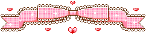

hello internet ♡

I finally made my own corner of the web.
I wanted Slavikova to feel like something you could have stumbled into sometime between 2004 and 2008: pink borders, pixel graphics, guestbooks, little widgets, music players and layouts that cared more about personality than conversion rates.
I’m going to use this place as a diary, scrapbook, fashion archive, cat museum and tiny collection of whatever I do not want to lose in a social-media feed.
The best part is that it does not need to be optimized for anyone except me and the people who happen to wander in.
xoxo, Lari ♡